{kind=link}
{kind=link}

This text is a semi-transcript (a middleground between a slide-dump and a complete article) of a talk I gave for my institute at NTNU on 20. september 2017. The attendees were researchers in engineering cybernetics and robotics, but my target audience is a practitioner that writes software on a regular basis. The talk was meant to present a project I had been working on since a year prior: vdb - a visual debugger; but more generally it was an attempt to convey my thoughts about visualizing software and the limitations of today's mode of debugging, which is primarily based on parsing text on a screen.
I want to begin this talk with a quiz: I'm going to show you two images generated by a computer program I wrote. One of the images was generated when the program had a bug. In the other, the bug is fixed. Without any more information, I'd like you to take a wild guess as to which image was produced by the buggy program.
Note: Click the images to see them in full size.
The answer is (hidden, mark this line to see it): A is the buggy program, B is running correctly.
Note: Most of the audience answered A (correct). No one answered B, and some weren't sure. Live quizzes are always nerve-wracking!
Great! We'll get back to this. Now I want to take you back 30 years ago to 1986. A paper was published that stirred up the software engineering industry. It was called No Silver Bullet, and written by software engineer and computer scientist Fred Brooks. At the time, Brooks was concerned about software engineering: in particular, why it’s so hard.
He wanted to know why we ship software with bugs in them? Why do we push back deadlines? How can we launch a space probe that does its calculations in the wrong units? Even today, big companies with thousands of engineers, still ship buggy software.
Note: See also The Engineering Commons Podcast: Episode 133 - Embarrassed Engineer for an amusing look at some of SE's (non-fatal) mistakes.
His essay was pessimistic: "within a decade, there is no single development, in either technology or management technique, which by itself promises even one order of magnitude improvement in productivity".
For example, moving from writing assembly code to writing in high-level languages was one of the greatest productivity boosts in software engineering: software was produced faster and it was less error-prone. But at the time, he doubted we would see another invention come close to the same effect that high-level languages had on the industry.
His 1986 essay caused a lot of debate in the industry as, nine years later, he was urged to publish a follow-up, to address those who had written to him telling him he was wrong. That their Database-Driven Declarative Meta Programming Language was the bullet the industry was searching for. Suffice to say, Brooks remained unconvinced.
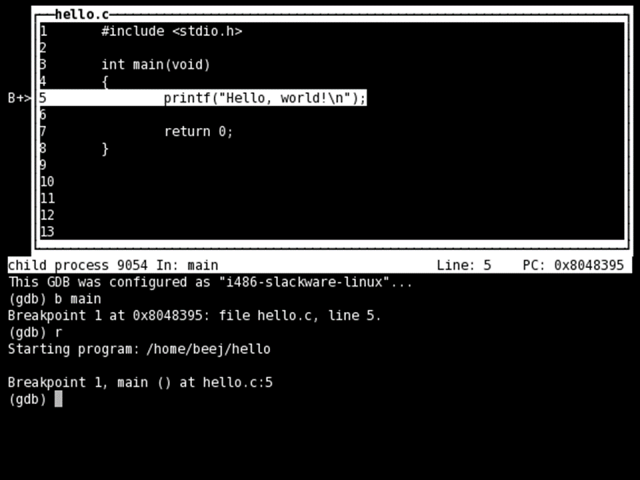
It is now Wednesday. September 20. 2017. The majority of programs are written in languages and analyzed with tools, based on 30 or even 40 year old technology and ideas.
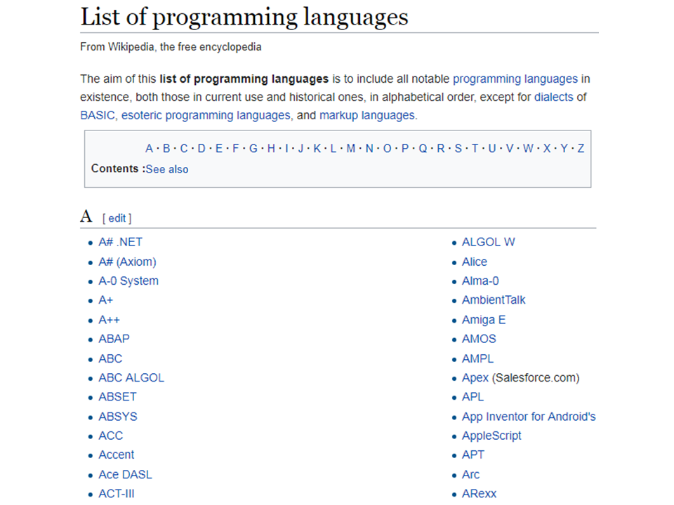
Of course things have changed over time; Python, Javascript, Go and Julia, these days we have so many languages that wikipedia can barely keep up.
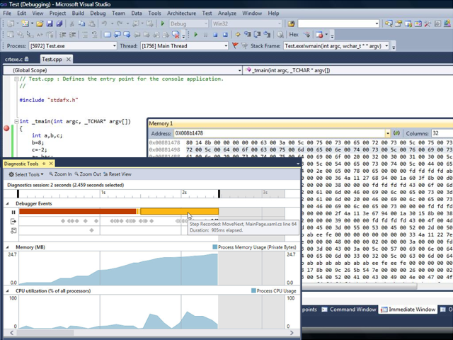
Note: The image shows Visual Studio (unsure which version) with its profiler and memory view open.
Debuggers and profilers have gotten more user friendly, or atleast, they look prettier.
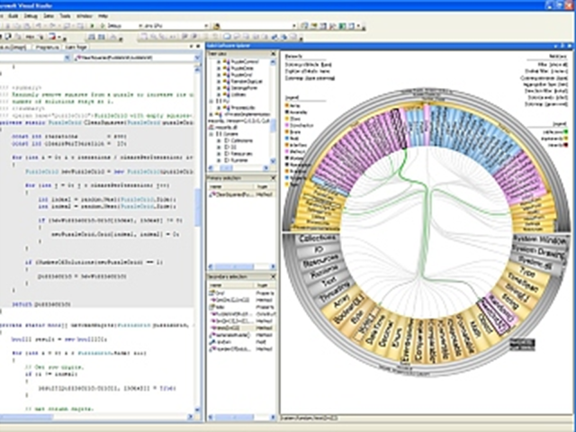
Note: I found this image by searching for 'code visualization'. The tool was intended to visualize the structure and dependencies in software systems.
We have elaborate project management tools like Jira. And we have made countless attempts at visualizing our code.
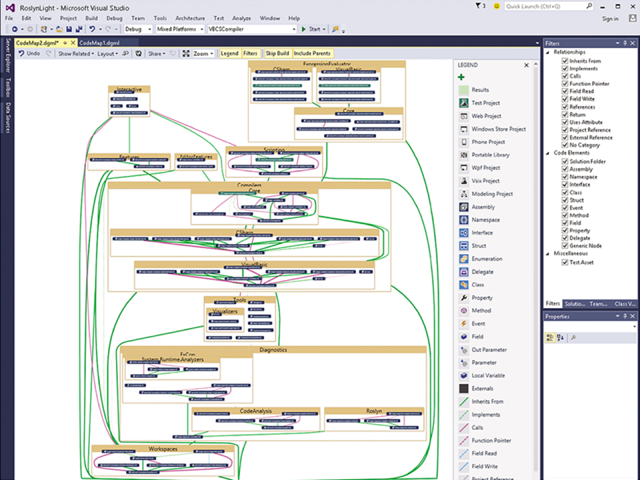
Note: Visual Studio also jumped on the code visualization bandwagon at some point. I have personally not tried out this feature, so it may very well be useful.
And yet, software engineering is still hard. We still release buggy software. We still fail to meet deadlines due to unforeseen problems. We have to make our initial designs under the presumption that we will make mistakes in the future. So what's going on? Is he still right? Is there no silver bullet in sight?
Let's look at that quiz from earlier. Debugging or analyzing program behavior is usually associated with text: printf statements flying by in a terminal, or hexadecimal numbers in a memory table, or variable and register watches. But in this mode of debugging, where you read text and reason about it in your head, you are ignoring the part of your brain that handles rich visual information, that evolved over millions of years to reason about large and complex data.
This example illustrates how awesome your brain is at recognizing patterns. But if this part of our brain is able to understand large, interconnected sets of data, maybe we are doing ourselves a disservice by ignoring it? Of course, Brooks knew about this. But he doubted we would be able to visualize software in a helpful way.
We can understand why he was so sceptical: our attempts at visualizing code have often been in the form of graphs connecting all the bits and pieces together. But once the program becomes sufficiently complex, this graph falls victim to the very problem it was meant to solve in the first place, and becomes more like an illustration that acknowledges the complexity, instead of a tool that reduces it.
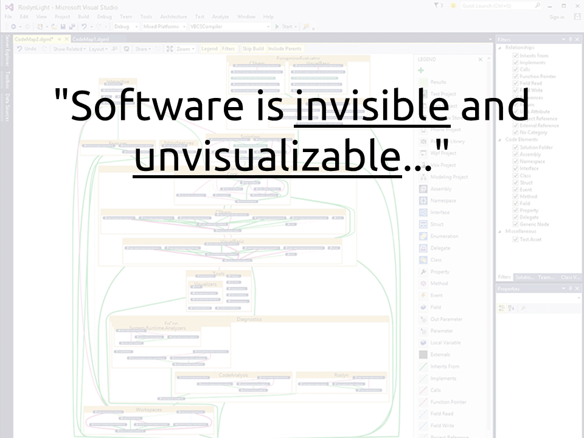
"Software", he said, "is invisible and unvisualizable. This difficulty in visualizing software impedes understanding within a single mind, and severely hinders communication between minds."
In the rest of this talk I will show you my silver bullet. I called it VDB, short for visual debugger. This was a mistake, because I constantly mistype the name. But it's better than my first attempt, which was an abbreviation of "graphical debugger", or, GDB: the double-meaning I thought was only clever at the time, and not a source of headaches and confusion.

To give you some context around why this tool was brought into existence, I'd like to show you a problem I worked on a year ago.
I needed an algorithm that could find dense clusters in a set of 2D points. I searched on Google, and found many algorithms that I could use. I chose mean-shift, and according to stackoverflow, it works like this:
Let’s say that this is our input data and we want to find those two clusters.
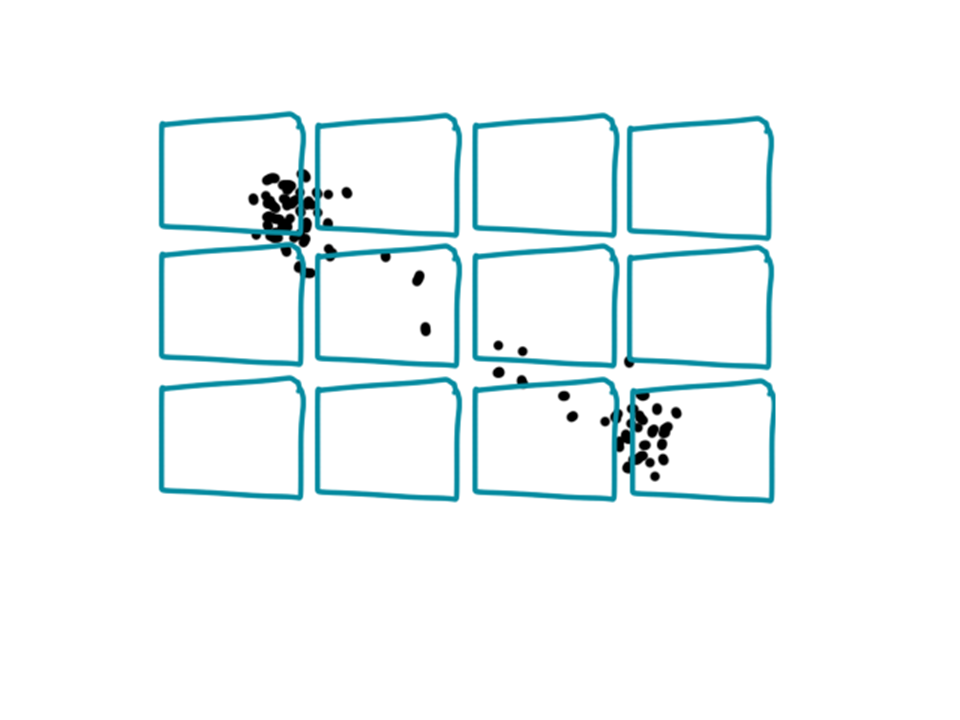
The first step is to draw some rectangles that fully cover your data points.

Then, for each rectangle, find the average – the mean - of the points inside it, and move the rectangles to be centered around the average.
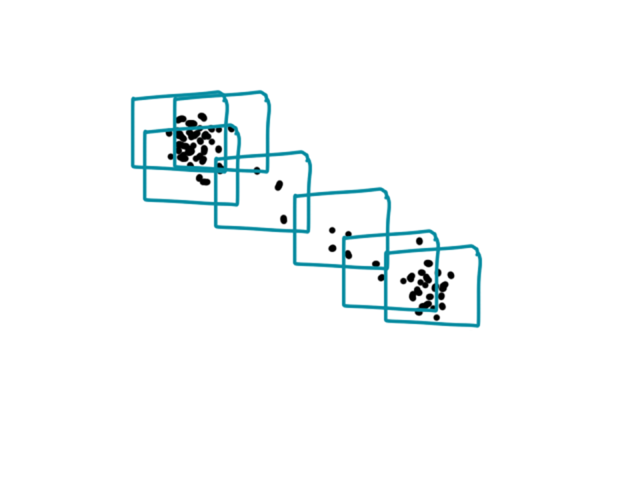
You repeat this procedure - compute the mean of the points inside the rectangle, move the rectangles, etc - until you think your rectangles have converged.
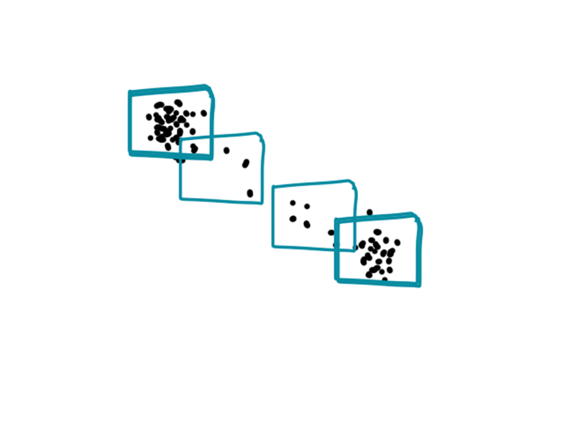
The idea is that rectangles that started close to a cluster will converge to that point, since that is where the average lies. At the end, you can then check where the clusters are by looking at the statistics of the rectangles: the number of points inside, the spread of the points, or if any other rectangles converged to that spot.
I ran this algorithm on my data and wanted a way to see all the points and the rectangles. I started doing what I thought was the simplest thing, which was to literally draw an image and save it as a PNG file, and open that in an image viewing app. This turned out to be really tedious, so I decided to write some code that would open up a graphics window at various points in my program, that would let me draw the data directly with basic OpenGL commands.
I already had a bunch of OpenGL code lying around from past projects, so this only took an evening (that is more time spent than what it saved me over the dumb approach, but as we will see, I got my return on this investment fairly quickly). Unfortunately, all screenshots of this are lost in the sands of time; except for the one above, which looks kinda like stars in a galaxy.

The algorithm appeared to work on the first try and the rectangles correctly found the clusters, just like I wanted them to. But something strange was happening.
Instead of slowing down, some of the rectangles kept shaking back and forth. I wasn't sure if this was meant to happen or not, so I decided to probe further into this behaviour.
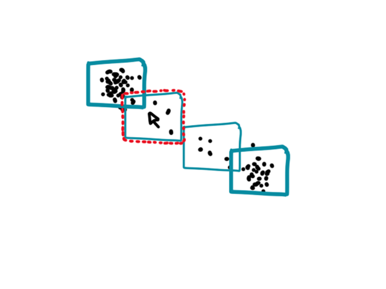
I knew about this amazing library called Dear ImGui that lets you really easily create quick GUIs, and it had code to integrate it into an OpenGL/SDL graphics window. So I decided to add that, and make it so I could hover my mouse over one of the suspicious rectangles, and see a text tooltip showing more information about it.
Like the number of points inside the rectangle.
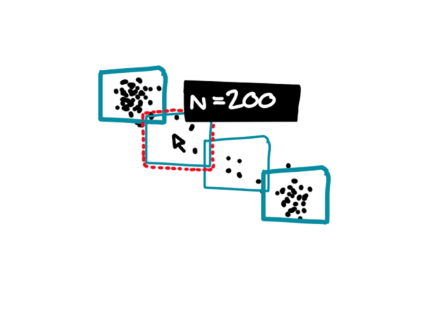
I was surprised to see that the number of points within the rectangle kept growing...
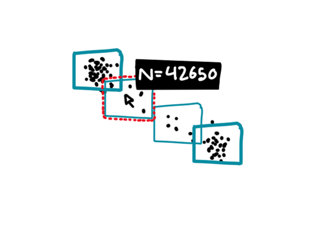
I quickly realized that I forgot to set the count variable to zero after moving the rectangles to their new location. I fixed the bug, and the rectangles converged in much fewer iterations, saving precious milliseconds of computation.
The moral of this story is that if I had not drawn each step; and if I couldn’t interact and explore my data, I probably wouldn’t even have known that the bug was there. Despite the algorithm sort of working anyway, some other input may well break it (algorithms like this make me want to introduce another concept of robustness: not just robustness against errors in the data, but also robustness against errors made by the programmer!). Not only could this have caused hard to find issues in the future but it also meant that the program was running slower than it needed to.
This simple visualization program, which started as an evening project, eventually started getting used in all of my projects from that point on: not only computer vision projects (like the one in the story), but I also used it for course work in robotics and AI. The ability to quickly create interactive visualizations, that could let me explore and understand my program, turned out to be more useful than I imagined.
Note: To give an example, I used it for an assignment in my robotics and kinematics class, where we were supposed to design an algorithm that would control the joints of a robot arm to throw a ball as far as possible. My solution was to apply a joint torque that varied over time, and made a quick GUI program that let me tune the torques at discrete time points while drawing the resulting trajectory of the arm and the ball.
That tool eventually became VDB. But enough talk, let's look at some code: take this simple program.
#include <vdb.h>
int main() {
float x = 0.0f;
printf("%f", x);
return 0;
}
Compile and run.
Well it doesn't do a whole lot, but for those of you who have tried to use C++ libraries, you know that getting to this point can often be the hardest part, and can take many hours or even days of work. I've tried to make it easy to download and try out the library, and also easy to integrate it into your project, no matter what build system you're using, so hopefully this will not take much of your time.
Anyway, this program doesn't do anything. It creates a variable x, prints it to the terminal, and then exits. For the sake of fitting the example on a slide and in your head, x is only a float variable, but you can imagine it's something more complicated, like the result from some image processing algorithm, or the measurements from a scanning lidar. So maybe we want to visualize x or modify x, before printing it to the terminal (or passing it on to the next step of an algorithm).
#include <vdb.h>
int main() {
float x = 0.0f;
VDBB("hi!");
{
}
VDBE();
printf("%f", x);
return 0;
}
With VDB you can say that you want to "pause" the code to open a graphics windows, where you can visualize and modify your program. To do this you use the VDBB-VDBE block.
VDBB(label):
if (!window_open(label)) {
open_window(label);
while (window_update())
{
// your code goes here
VDBE:
draw_window();
}
VDBB and VDBE are just macros that open a window (if it is not already open), and enter a while loop that updates at 60 Hz (synced with your monitor). You can imagine they expand to something like this.
When you run the program it will start at main and set x to zero, but instead of printing to the terminal and exiting, it will open up this graphics display that runs the code inside the VDB block 60 times per second. Inside this block you can create user interfaces and any visualization you want.
#include <vdb.h>
int main() {
float x = 0.0f;
VDBB("hi!");
{
DragFloat("x", &x);
Text("The value of x is %f", x);
}
VDBE();
printf("%f", x);
return 0;
}
For example, let's say we wanted a slider that we could drag to change the value of x, and also see the value. I'm going to add some widgets from ImGui called DragFloat and Text.
If you run it you get something like this. First you get a graphics window native to your operating system, here it's Windows; and then I automatically got this tiny window called Debug that contains my widgets.
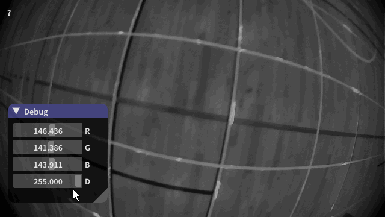
You can use this to see how the results from an image processing algorithm changes as you adjust the parameters. This is an immediate productivity boost, because instead of changing a value, recompiling, saving an image to disk and seeing the results with Windows Fax and Photo Viewer, you get instant feedback.
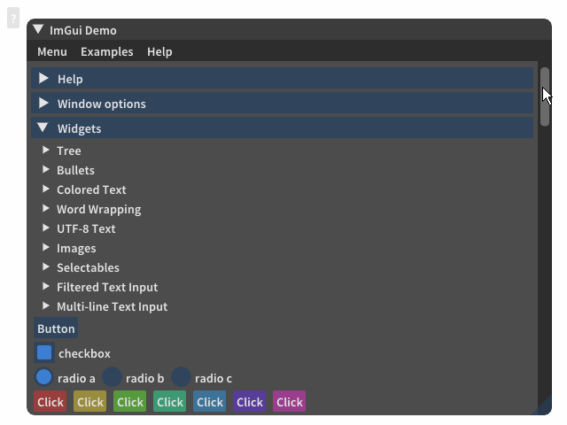
Dear ImGui is a great library that lets you prototype GUIs quickly, atleast compared with GUI libraries like Qt. It comes with buttons, sliders, checkboxes; histograms and line plots; tables and text input; And there's a lively community of developers that contribute with extensions and widgets.
Note: See Nicolas Guillemot's flash talk at CppCon 2016 on immediate mode GUIs, and a comparison with traditional GUIs like Qt.
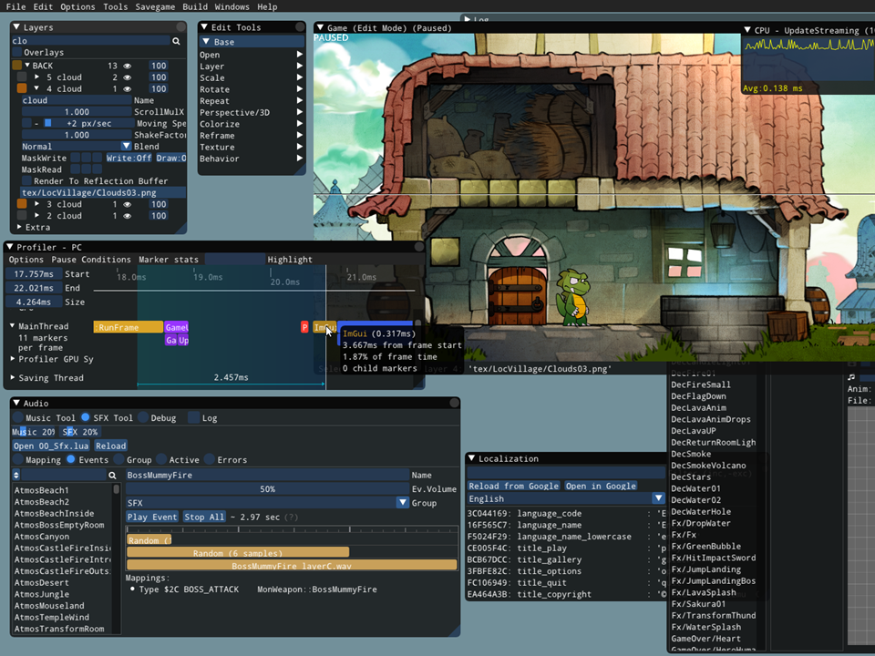
Despite the simplicity, ImGui can be used to make "real" applications. Here is a screenshot from a debugging mode of a video game; in here the developers can do stuff like edit objects, see how long the frame took to render, or how long it took to update the AI, and they can pause the game to inspect the state.
Note: This screenshot is from the author of Dear ImGui himself and a game he and his team were working on. See the gallery for more examples.
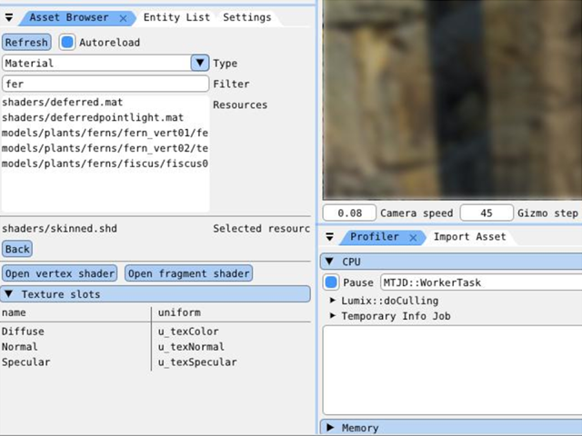
Here is a tool someone made to create texture assets for 3D models. You can go to town and style the GUI to your own liking, and add tabs and subwindows to make it feel like a normal desktop application.
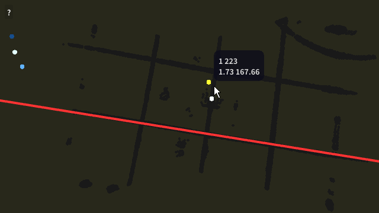
Besides GUIs, you have access to regular OpenGL commands, which lets you draw both 2D and 3D data, like points, lines or cubes. I have also added some features that I've found to want often when writing these visualizations. One of them is an easy way to do conditional drawing: that is, drawing additional information or graphics when the mouse is hovering over a specific thing.
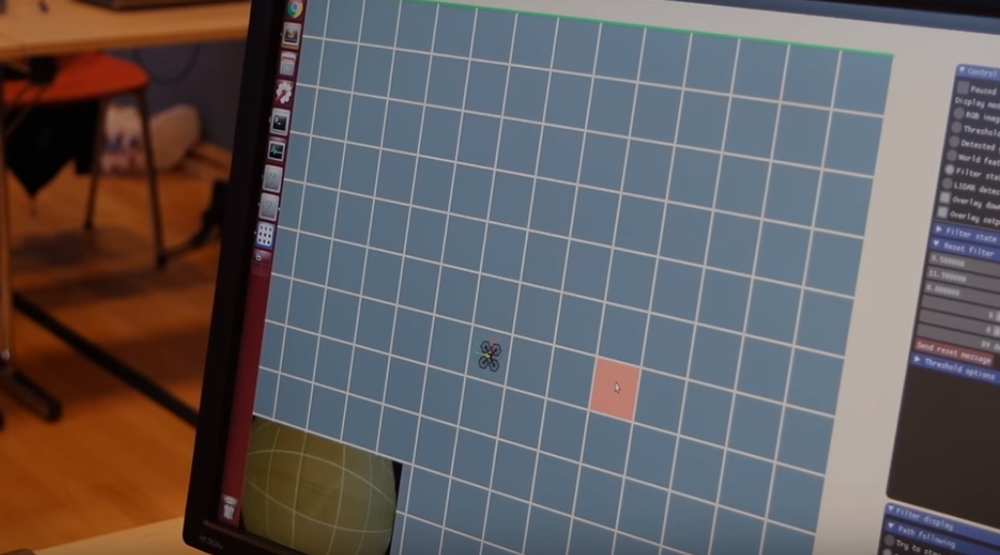
In our team at Ascend we used this tool to make our mission status viewer. It shows a video feed from on-board cameras, displays position state estimates, and lets us reset the Kalman filter to a specified state. We can also draw flight paths and tell the drone to execute them, or see the temperature and CPU load of the on-board computers.
Note: Ascend NTNU is the autonomous robotics group at my university.
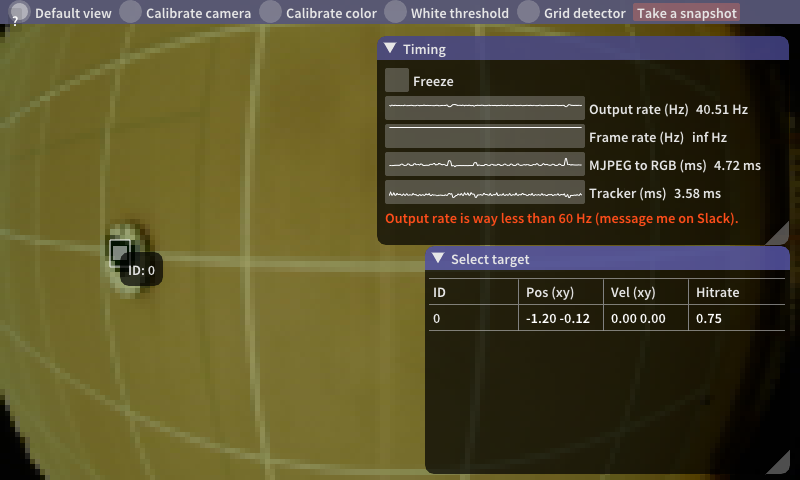
We can see if programs are running slowly and how long they take to compute stuff and display a warning, if they run too slow.
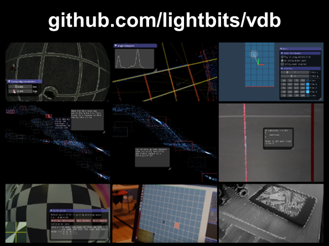
In other words, visualizing your code is more than just UML diagrams or fully connected graphs. Make interactive visualizations that let you explore your data and see your program behaviour, take advantage of the millions of years of evolution that produced your awesome brain. Display sensor data, like camera images or lidar range measurements, as they come in. Modify and tweak variables at runtime with instant feedback.
If this talk has gotten you interested, check out the github page. There you will find a readme, which explains how you can get started and try out a simple test program, whether you're running linux, windows or macos.
There's also a gallery that shows some examples with source code, and examples that show how to integrate VDB into a CMake or a Makefile project, or how you can combine it with robotics libraries like ROS or Dune. If you have any questions, feel free to get in touch. You can send me an email, or make an issue on github.
Thank you!
Note: Due to time I did not mention any alternatives to this project, of which there are a few. For example, Jupyter notebooks can be a powerful development tool, although the application domain does not strictly overlap with vdb. OpenCV also has some functionality to open a window, but installing OpenCV and configuring your project to use it can be a hassle.
Simen Haugo © 2017
BY-NC-SA 4.0